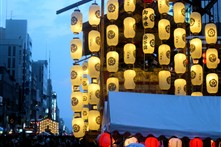
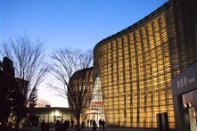
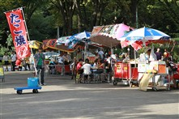
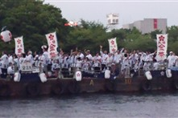

Day Trip Ideas
Use these ideas when you want to turn an event into a full day around the city.
Many event areas have nearby temples, parks, shopping streets, galleries, or food spots. Pairing one nearby stop with an event makes the trip feel more complete without overloading your schedule.
-

Walk the surrounding neighborhood before the main event begins. Arriving early gives you time to find food, station exits, restrooms, and a good viewing area.
-

Add a museum, gallery, or cultural stop nearby. Indoor stops are helpful when the weather is hot, rainy, or when you need a slower break.
-

Plan food before the busiest hour. Festival stalls are fun, but a nearby meal spot can be useful if lines are too long.
-

Leave room for the return trip. After fireworks or parade finales, stations can be crowded, so a relaxed exit plan makes the day easier.